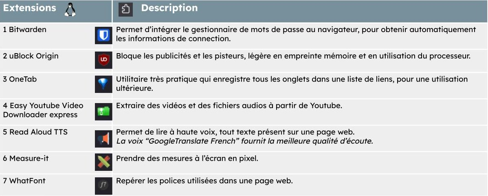
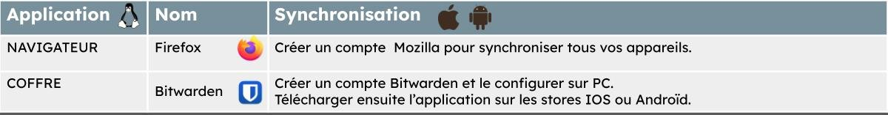
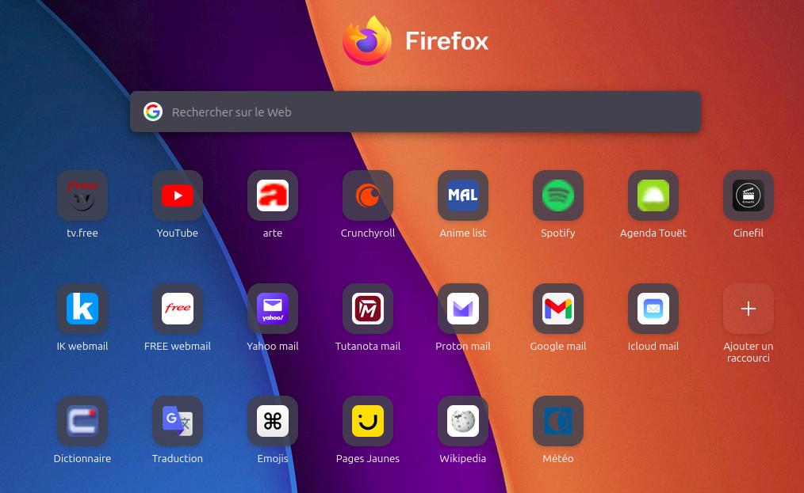
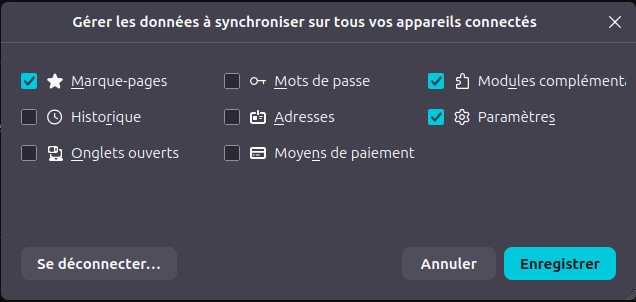

Installer les extensions



Paramètre de sécurité à cocher :
Sécurité stricte Résoudre les problèmes majeurs des sites (recommandé)
Supprimer les cookies et les données des sites à la fermeture de Firefox
Vider l’historique lors de la fermeture de Firefox
Paramètre de sécurité à décocher :
Proposer d’enregistrer les mots de passe
Enregistrer et renseigner automatiquement les informations de paiement
Enregistrer et remplir automatiquement les adresses

